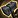

War Within adds four Blacksmithing specializations unlocked at skill levels 25, 50, 60, and 75. This guide breaks down each one and includes example builds for different goals like crafting personal gear, selling at the Auction House, or completing Crafting Orders. If you're playing Midnight, I have a separate Midnight Blacksmithing Specialization Guide.
Blacksmithing Specializations
Each specialization focuses on a different area: gear crafting, consumables, utility, or stat optimization. Below is a quick overview of what they do and when it's worth investing your points.
1. Everburning Forge
Unlocking this specialization gives you access to the Everburning Ignition recipe. It increases your Ingenuity, Resourcefulness, and Multicraft, but only while the buff from the item is active (10 minutes). Without using the item, this specialization provides no stat bonuses at all.
Although it's not worth investing points early, make sure to unlock this as your second or third specialization. Everburning Ignition is cheap to craft and helps with leveling.
Once you're done with your main crafting build, you can invest points here to boost the stat bonuses from the Ignition spell. It's a good optimization tool, just not a good starting point.
2. Means of Production
This specialization focuses on crafting alloys, profession equipment, consumables, and finishing reagents. The center node gives bonus skill to all items in the tree and unlocks the  Artisan Blacksmith's Toolbox recipe.
Artisan Blacksmith's Toolbox recipe.
- Tools of the Trade – Unlocks the
 Artisan Blacksmith's Hammer. One branch boosts tool skill, the other accessories.
Artisan Blacksmith's Hammer. One branch boosts tool skill, the other accessories. - Stonework – Extra skill when crafting enhancement stones for weapons and profession tools.
- Fortuitous Forges – Increases skill with Frameworks and Alloys. Each sub-spec improves one type.
3. Weaponsmithing
Weaponsmithing increases your skill with crafted weapons and unlocks weapon recipes as you invest points. It's a strong starting point if you want to make your own weapons or fulfill Crafting Orders for others. Each weapon type requires points in its own sub-specialization.
Some weapon recipes are unlocked through specialization, while others come from vendors or drops. You can find the full list in the example builds sections below.
4. Armorsmithing
Armorsmithing improves your ability to craft high-quality armor and gives access to more armor recipes as you invest points. Each sub-specialization focuses on different armor slots and offers a significant skill bonus.
It's a good starting specialization if you want to gear your own character or cover multiple gear slots for Crafting Orders.
Which Build Should You Choose?
There isn’t a single best Blacksmithing build in War Within. The right choice depends on your goals. Whether you want to gear your own character, make gold at the Auction House, or focus on Crafting Orders, your build should match your playstyle.
Below are three example builds tailored to common goals:
- Crafting Gear for Personal Use - Focuses on making weapons or armor for your own character.
- Selling at the Auction House - Prioritizes mass-producing consumables and reagents for profit.
- Fulfilling Crafting Orders - Designed for players who want to specialize in high-end gear for others.
You can’t freely respec, so it’s important to pick a clear goal early on. You only get one full reset, and Knowledge Points are slow to earn even with catch-up. It’s best to fully commit to a single build before branching out.
Build 1: Crafting Gear for Personal Use
This build is for players who want to make their own weapons or armor. Focus on either Weaponsmithing or Armorsmithing first. The other specializations can be ignored for now.
Thanks to the Concentration system, you don’t need to fully max out any tree to craft high-quality gear. Concentration regenerates slowly, but that’s usually fine for personal use since you’ll only craft a few items.
Choosing Between Weapons or Armor
Weapons usually offer a bigger stat upgrade per slot, so they’re a solid first choice. Armor unlocks recipes for more gear slots, so it's better for broader gearing. Pick whichever fits your class and needs.
Example Builds:
Before picking a weapon type, scroll down and check the Available Weapon Recipes section below. They show which specialization unlocks each weapon and which ones require vendor recipes or drops. For example, if your class can use both 2H Maces and 2H Axes, it's more efficient to go for Axes since the recipe is unlocked directly through specialization, while the Mace requires a drop.
Example Build:
This is just an example build. You can use the same structure but swap in different sub-specializations depending on the exact item you want to craft.
Once you’ve decided on a weapon, here’s an example build for crafting a 2H Axe:
- Hafted (10) - Unlocks sub-specializations
- Axes and Polearms (15) - Unlocks the 2H Axe recipe
- Weaponsmithing (30) - Gives +80 Skill to all weapons
This is enough to craft a max-quality weapon using Concentration and Q3 materials.
Spending the Rest of Your Points
Go into Armorsmithing next. After you’ve unlocked the recipes you need, you can put points into Everburning Forge to save some materials with Resourcefulness.
Available Weapon Recipes
Some weapon recipes are unlocked through specialization, while others come from vendors or drops. You can use the tables below to see which specialization unlocks what, and where to get the others.
Click to show the full list of Recipes
Vendor and Drop Recipes
| Item | Type | Specialization | Recipe Source |
|---|---|---|---|
| Charged Runeaxe | 1H Axe (Int) | Hafted → Axes and Polearms | Drop: The Theater Troupe |
| Charged Crusher | 2H Mace (Str, Agi) | Hafted → Maces | Drop: Awakening the Machine |
| Charged Facesmasher | Fist Weapon | Blades → Short Blades | Vendor: Lyrendal Cost: 150x |
| Charged Slicer | 1H Axe (Str, Agi) | Hafted → Axes and Polearms | Vendor: Khaz Algar World Vendors Cost: 150x |
Specialization
| Item | Type | Specialization |
|---|---|---|
| Everforged Mace | 1H Mace | Hafted (10) → Maces (0) |
| Charged Invoker | 2H Mace (Int) | Hafted (10) → Maces (15) |
| Everforged Greataxe | 2H Axe | Hafted (10) → Axes and Polearms (0) |
| Charged Halberd | Polearm | Hafted (10) → Axes and Polearms (15) |
| Everforged Warglaive | Warglaive | Blades (15) |
| Everforged Stabber | Dagger (Agi) | Blades (10) → Short Blades (0 / 15) |
| Everforged Longsword | 1H Sword | Blades (10) → Long Blades (0) |
| Charged Claymore *** | 2H Sword | Blades (10) → Long Blades (10) |
| Charged Hexsword | 1H Sword (Int) | Blades (10) → Long Blades (15) |
*** This recipe is also sold by Auralia Steelstrike (Renown 4 with the Hallowfall Arathi). Cost: 150x  Artisan's Acuity.
Artisan's Acuity.
Each Armorsmithing sub-spec unlocks recipes for three gear slots. You can’t go wrong with any of them, but Sculpted Armor is a strong first choice. If your class uses Shields, Large Armor is also great.
- Large Armor: Chest, Legs, Shields
- Sculpted Armor: Head, Shoulder, Feet
- Fine Armor: Waist, Wrists, Hands
Example Build:
This is just an example build. You can use the same structure but swap in different sub-specializations depending on the exact item you want to craft.
- Start by learning the sub-specialization. In this example, pick Large Plate Armor.
- Large Plate Armor (30) - Unlocks the recipes for Chest, Legs, and Shields.
- Armorsmithing (30) - Grants +75 skill for all armor types and allows you to use optional reagents and embellishments in every armor slot.
This setup is enough to craft a max-quality Chest, Legs, or Shield using Concentration and Q3 materials.
Having the ability to use embellishments and Missives is a big advantage for Patron Crafting Orders. Some customer requests can't be completed without this.
Spending the Rest of Your Points
Go into Weaponsmithing next. After you’ve unlocked the recipes you need, you can put points into Everburning Forge to save some materials with Resourcefulness.
Build 2: Selling Items at the Auction House
This build focuses on crafting consumables and reagents to sell on the Auction House. You’ll want to fully spec into Means of Production.
What Can You Sell?
Some blacksmithing items, like alloys, are always in demand and easy to sell. Others, like frameworks or enhancement stones, can still be profitable but usually sell slower or require more specialization. Here's a breakdown of what each category offers.
| Alloys |
Most profitable and easiest to sell. High demand and fast sales even without a perfect build. The safest pick for steady gold. |
| Stoneworks |
Decent sellers but more niche. Slower turnover and higher undercutting. Better if you’re optimizing for these builds specifically. |
| Frameworks |
Low to medium demand. Useful if you're already going deep into Fortuitous Forges, but not worth investing into just for gold. |
Profession Gear
|
Sales are realm-only (not cross-realm) and rare-quality gear is BoP. Low demand, heavy undercutting, and slow sales this late in the expansion. |
Example Build that focuses on selling Alloys
This example shows a full Alloy crafting path:
- Means of Production (10)
- Fortuitous Forges (15)
- Alloys (20)
- Back to Fortuitous Forges (15 → 30)
- Back to Means of Production (10 → 30)
Total: 80 Knowledge Points
Spending the Rest of Your Points
From here, you have two solid options:
- Go deeper into Everburning Forge to boost Multicraft and Resourcefulness for more efficient crafting.
- Max out more sub-specs in Means of Production to unlock all sellable items at high quality.
Build 3: Completing Crafting Orders
This build focuses on crafting max-quality weapons, armor, or profession equipment for others using the Personal Crafting Order system. Your goal is to get high enough skill to complete orders without relying on Concentration, so you can craft more than one item per day.
Note: Crafting Orders are not cross-realm. You'll only receive orders from players on your own realm, so competition and demand will vary based on your server's population.
Why Avoiding Concentration Matters
Concentration lets you craft items at a higher quality than your base skill allows, but it's limited. You regenerate around 240 Concentration per day, and most max-quality crafts require at least 300. That means you can only do one high-end craft per day, unless your skill is high enough to skip using Concentration altogether.
By getting just one or two recipes to max-quality without spending Concentration, you'll be able to complete unlimited orders for those items and earn gold consistently.
What Should You Specialize In?
Weapons are always in demand and a safe pick, but you'll face more competition. Armor has less competition but requires more points per slot. Profession gear is cheaper to unlock, but demand is very low.
- Weapons – High demand, especially early in the season. Some require vendor or drop recipes.
- Armor – Fewer crafters per slot. You can specialize in specific gear pieces like Legs, Shields, or Feet.
- Profession Gear – Very low demand this late into the expansion. Not worth focusing on first.
Example Builds:
Here are three builds tailored for completing Personal Crafting Orders. Each focuses on hitting max-quality for a small number of key items.
Pick the weapon type you want to focus on and follow this general path. For example, to max out Axes and Polearms:
- Hafted (10) – Unlocks sub-specializations
- Axes and Polearms (20) – Unlocks recipes and +15 skill
- Back to Hafted (10 → 25) – Unlocks finishing reagents and another recipe
- Weaponsmithing (30) – +80 Skill for all weapon types
- Back to Axes and Polearms (20 → 25) – To finish the tree
Each armor sub-spec covers 3 gear slots. For example, if you want to specialize in Hands Slot, follow this path:
- Large Plate Armor (30)
- Armorsmithing (30) – +75 skill and access to embellishments and Missives
- Sub-spec (e.g. Gauntlets) (30)
This setup lets you complete most Patron Crafting Orders with max quality, even if they require optional reagents or embellishments.
If you want to focus on crafting tools for other professions:
- Means of Production (10)
- Tools of the Trade (30)
 Trade Tools (20)
Trade Tools (20)- Back to Means of Production (10 → 30)

Trade Accessories (20)
This build unlocks 8 different profession tool recipes with just 100 points. It's the cheapest option but has the lowest demand.
Spending the Rest of Your Points
Once you've maxed out your chosen gear type, you can either unlock more recipes in that tree or invest in Everburning Forge and Discerning Discipline to boost Resourcefulness and save mats.